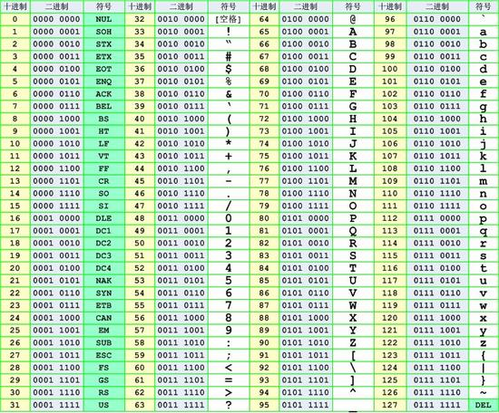
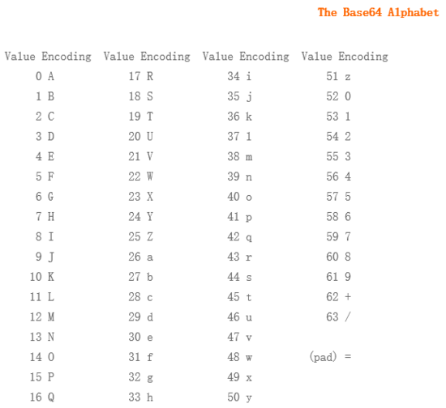
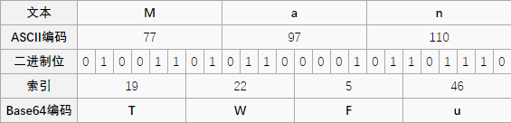
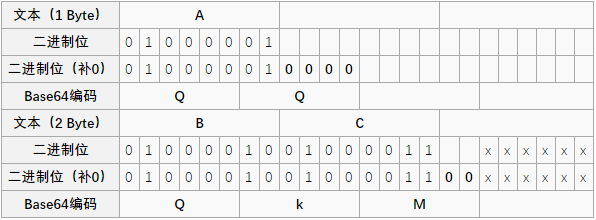
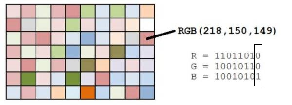
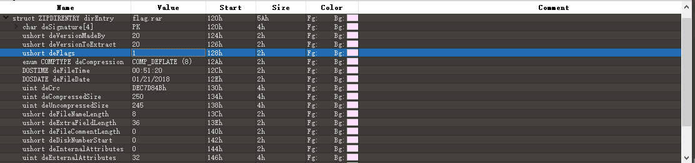
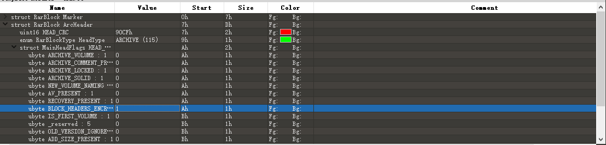
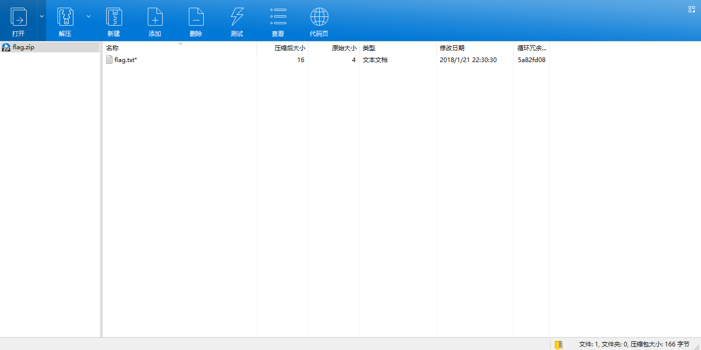
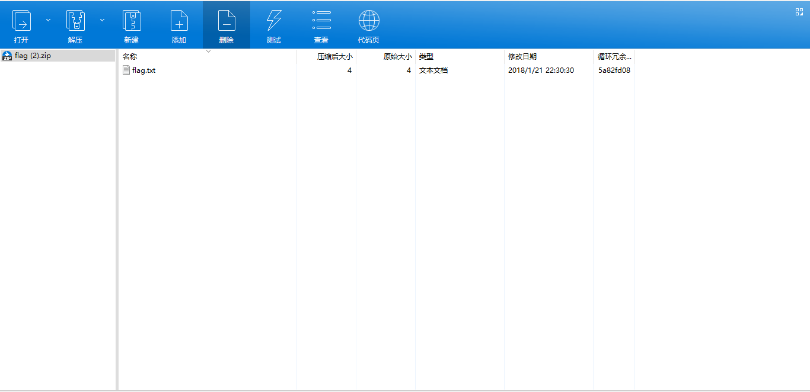

前言
这是寒假里写给萌新们的 CTF Misc 相关的入门讲解，现在顺便把它搬到博客上
其实我也只是个入门半年的萌新呀（误
简介
Misc 即安全杂项，题目或涉及流量分析、电子取证、人肉搜索、数据分析等等
在 Misc 的讲解中，将从以下两个方面介绍这一块的知识：
- Encode（编码转换）
主要介绍在 CTF 比赛中一些常见的编码形式以及转换的技巧和常见方式
- Forensic && Stego（数字取证 && 隐写分析）
隐写取证是 Misc 中最为重要的一块，包括文件分析、隐写、内存镜像分析和流量抓包分析等等，涉及巧妙的编码、隐藏数据、层层嵌套的文件中的文件，灵活利用搜索引擎获取所需要的信息等等。
编码分析 && 古典密码
下面是 CTF 比赛中较为常见的几种编码格式
通信领域常用编码Morse 编码
计算机相关的编码字母表编码ASCII 编码Base 编码URL 编码Unicode 编码
现实世界中常用的编码条形码二维码
除了相应编码之外，Misc 题目中往往和一些较为简单的古典密码相结合，比如说如下古典密码
单表替换密码凯撒密码
多表替换密码其他类型栅栏密码
Morse 编码
特点
- 只有
.和- - 最多 6 位
- 也可以使用 01 串表示
工具
例题
请选手观察以下密文并转换成flag形式
..-. .-.. .- –. - …. .. ….. .. … – — .-. … . -.-. — -.. .
字母表编码
特点
A-Z/a-z 对应 1-26 或者 0-25
ASCII 编码

特点
我们一般使用的 ascii 编码的时候采用的都是可见字符，而且主要是如下字符
- 0-9, 49-57
- A-Z, 65-90
- a-z, 97-122
二进制编码
将 ascii 码对应的数字换成二进制表示形式
- 只有 0 和 1
- 不大于 8 位，一般 7 位也可以，因为可见字符到 127
- A: 01000001; B: 01000010; a: 01100001; b: 1100010
十六进制编码
将 ascii 码对应的数字换成十六进制表示形式。
- A-Z–>41-5A
- a-z–>61-7A
例题 Jarvis oj 德军的密码
已知将一个flag以一种加密形式为使用密钥进行加密，使用密钥WELCOMETOCFF加密后密文为 000000000000000000000000000000000000000000000000000101110000110001000000101000000001 请分析出flag
Base 编码
base xx 中的 xx 表示的是采用多少个字符进行编码，比如说 base64 就是采用以下 64 个字符编码，由于 2 的 6 次方等于 64，所以每 6 个比特为一个单元，对应某个可打印字符。三个字节有 24 个比特，对应于 4 个 Base64 单元，即 3 个字节需要用 4 个可打印字符来表示

编码 Man

如果要编码的字节数不能被 3 整除，最后会多出 1 个或 2 个字节，那么可以使用下面的方法进行处理：先使用 0 值在末尾补足，使其能够被 3 整除，然后再进行 base64 的编码。在编码后的 base64 文本后加上一个或两个 = 号，代表补足的字节数。也就是说，当最后剩余一个八位字节（一个 byte）时，最后一个 6 位的 base64 字节块有四位是 0 值，最后附加上两个等号；如果最后剩余两个八位字节（2 个 byte）时，最后一个 6 位的 base 字节块有两位是 0 值，最后附加一个等号

特点
- base64 结尾可能会有=号，但最多有两个
- base32 结尾可能会最多有 3 个等号
- 根据 base 的不同，字符集会有所限制
- 有可能需要自己加等号
工具
- 在线 Base64 编码
- python 库函数
例题 Jarvis oj base 64?
请用正确的编码格式解析以下文本
GUYDIMZVGQ2DMN3CGRQTONJXGM3TINLGG42DGMZXGM3TINLGGY4DGNBXGYZTGNLGGY3DGNBWMU3WI===
URL 编码
特点
大量的百分号
工具
Unicode 编码
特点
可能有不同的表现形式
源文本： The
&#x [Hex]: The
&# [Decimal]: The
U [Hex]: \U0054\U0068\U0065
U + [Hex]: \U+0054\U+0068\U+0065
工具
凯撒加密
原理
凯撒密码（Caesar）加密时会将明文中的 每个字母 都按照其在字母表中的顺序向后（或向前）移动固定数目（循环移动）作为密文。例如，当偏移量是左移 3 的时候（解密时的密钥就是 3）：
|
|
使用时，加密者查找明文字母表中需要加密的消息中的每一个字母所在位置，并且写下密文字母表中对应的字母。需要解密的人则根据事先已知的密钥反过来操作，得到原来的明文。例如：
|
|
破解
对于不带秘钥的凯撒密码来说，其基本的破解方法有两种方式
- 遍历 26 个偏移量，适用于普遍情况
- 利用词频分析，适用于密文较长的情况
其中，第一种方式肯定可以得到明文，而第二种方式则不一定可以得到正确的明文
工具
题目
根据凯撒加密后的密文：MGAKUZKRWZWGAWCP，解出原文（原文为 KEY 开头）
栅栏密码
原理
栅栏密码把要加密的明文分成 N 个一组，然后把每组的第 1 个字连起来，形成一段无规律的话。这里给出一个例子
去掉空格后变为
分成两栏，两个一组得到
先取出第一个字母，再取出第二个字母
连在一起就是
破解
暴力枚举所有可能情况
工具
例题
请找出密文隐藏的 flag
tn c0afsiwal kes,hwit1r g,npt ttessfu}ua u hmqik e {m, n huiouosarwCniibecesnren.
数字取证 && 隐写分析
前置技能
- 能够对文件中出现的一些编码进行解码，并且对一些特殊的编码(Base64,十六进制，二进制等)有一定的敏感度
- 熟知常见文件的文件格式,尤其是 文件头，协议，结构等
- 灵活地运用常见的工具、根据题目要求搜索工具、脚本等
图片隐写
PNG
文件格式 89 50 4E 47 0D 0A 1A 0A + 数据块 + 数据块
可能使用的隐写方式： LSB
LSB 全称 least significant bit，最低有效位
PNG 文件中的图像像素一般是由 RGB 三原色（红绿蓝）组成，每一种颜色占用 8 位，取值范围为 0x00~0xFF，即有 256 种颜色，一共包含了 256 的 3 次方的颜色，即 16777216 种颜色，而人类的眼睛可以区分约 1000 万种不同的颜色，这意味着人类的眼睛无法区分余下的颜色大约有 6777216 种
LSB 隐写就是修改 RGB 颜色分量的最低二进制位，每个颜色会有 8bit，LSB 隐写就是修改了像素中的最低的 1bit，而人类的眼睛不会注意到这前后的变化，每个像素可以携带 3bit 的信息

寻找这种 LSB 隐藏痕迹的话，可以使用神器 Stegsolve，来辅助我们进行分析
例题：教练我想打 CTF
{kind=link}
JPEG
JPEG 是一种有损压缩格式
FFD8 && FFD9 为 JPEG 文件的开始和结束的标志
可能使用的隐写软件：JPHS
压缩包分析
比赛中压缩包的考察主要是集中在 zip 和 rar 这一块，其他类型的较为少见，不会特别深入
通过 binwalk 以及 strings 可能发现部分信息
strings 通常可以发现隐藏在压缩包中的注释内容或者是解压需要的密码等
伪加密
在 Zip 格式中的 ZIPDIRENTRY 中，我们可以看到一个叫做通用位标记（General purpose bit flag）的 2 字节，不同比特位有着不同的含义
在 010Editor 中我们尝试着将这 1 位修改: 0–>1

Rar 文件的伪加密在文件头中的位标记字段上，用 010Editor 可以很清楚地看见这一位，修改这一位可以造成伪加密

密码爆破
主要使用 ARPR 和 AZPR 对可能的密码进行爆破
一般密码为数字+字母或纯数字，极有可能是本题的出题时间，比如说 20180122
CRC 校验
CRC 本身是「冗余校验码」的意思，CRC32 则表示会产生一个 32bit（8 位十六进制数）的校验值。由于 CRC32 产生校验值时源数据块的每一个 bit（位）都参与了计算，所以数据块中即使只有一位发生了变化，也会得到不同的 CRC32 值
值得注意的是，zip 中的 CRC32 是未加密文件的校验值.
这也就导致了基于 CRC32 的攻击手法
- 文件内内容很少（一般比赛中大多为 4 字节左右）
- 加密的密码很长
我们不去爆破压缩包的密码，而是直接去直接爆破源文件的内容（一般都是可见的字符串），从而获取想要的信息。
比如我们新建一个 flag.txt，其中内容为 123，使用密码 !QAZXSW@#EDCVFR$ 去加密


音频分析
MP3 隐写
MP3 隐写主要是使用 Mp3Stego 工具进行隐写，其使用方式如下
|
|
波形 && 频谱
通常来说，波形或频谱方向的题，在观察到异常后，需要使用相关软件（Audacity, Adobe Audition）
波形题需要观察波形规律，并将波形进一步转化为 01 字符串等，从而提取转化出最终的 flag
频谱隐写是将字符串隐藏在频谱中，此类音频通常会有一个较明显的特征，听起来是一段杂音或者比较刺耳
例题 flag在音乐中123
流量分析
网络协议
流量分析需要对一些常用的协议有简单的了解。
- IP / TCP
- UDP / TCP
- DNS
- HTTP / HTTPS
技巧
- 统计流量，以便于知道该流量包主要利用了哪些协议
- ip contains “xxx”，过滤内容
- 流重组：Follow TCP Stream
- 提取流中的文件数据
例题
常用工具一览
010Editor
十六进制文件编辑器，可以查看文件对应的字节，利用010的模板功能，能够轻松查看特定类型文件的内部结构
Audacity
音频隐写必备工具，可以方便地查看音频对应的波形和频谱
Stegsolve
图片隐写必备软件，可以用于图片的 lsb 隐写相关的题目
Binwalk
Misc 必备神器，有助于我们分析文件格式
Advanced Rar Password Recovery && Advanced Zip Password Recovery
针对 rar && zip 的密码爆破软件
WireShark
流量分析必备软件
And so on…
很多 Misc 题目往往需要我们现搜相应的工具和脚本进行做题，这时候就需要使用 Google or Baidu，相比较而言，Google 搜出来的结果往往质量更高~~